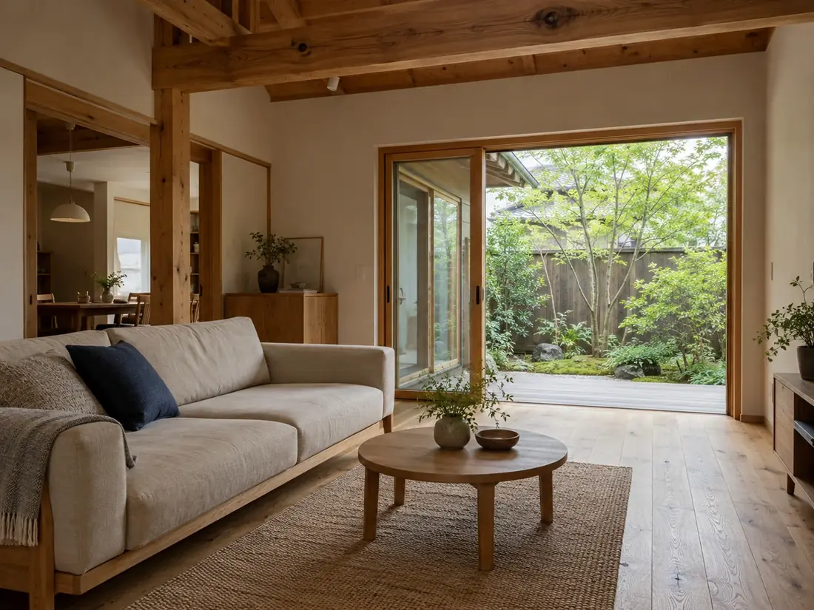
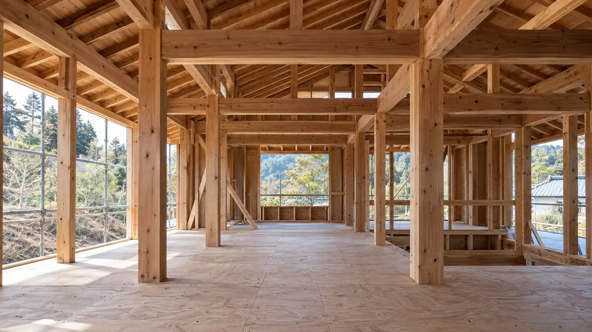
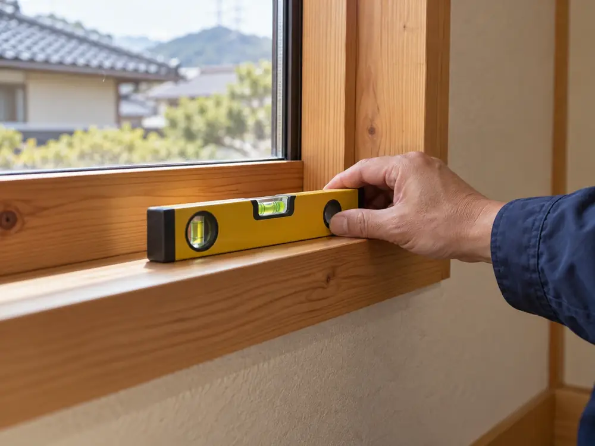

トップできること
できることと、工期の目安。
- 1新築・リフォーム・小さな修繕の3つを、同じ大工と現場監督が受け持ちます。
- 2費用は税込で表示します。追加の費用が出るのは4つの場合だけです。
- 3鉄骨造や3階建てなど、お受けしていない工事も先にお伝えします。
工期の目安
3つの工事を、同じ物差しで。
目盛りは0〜10か月です。斜線は、長くかかる場合の幅を示します。
新築相談から引き渡しまで約8〜10か月
うち工事約4〜5か月
リフォーム浴室の入れ替え約2週間
内装の全面改修約2〜3か月
小さな修繕訪問・点検・調整1日〜


ここまで含みます
3つの工事の、範囲と費用。
新築木造軸組の家
2,800万円〜（税込）延床30坪の例・土地代別
通る段取り一〜十のすべて
ここまで含みます
- 設計（間取り・仕様の打ち合わせ、図面）
- 確認申請などの手続き
- 基礎から仕上げまでの工事
- 玄関まわりの外構（アプローチ・ポスト）
含まないもの
- 土地代・登記費用・ローンの手数料
- 家具・カーテン
- 駐車場などの外構工事
リフォーム水回り・内装・外壁
50万円〜（税込）
通る段取り一・二・四・五・六・九
ここまで含みます
- 現地調査（床下・屋根裏の点検を含む）
- プランと項目ごとの見積もり
- 解体・施工・廃材の処分
住みながらの工事
範囲によっては、住みながら進められます。水回りが使えない日は、事前に日付をお伝えします。
小さな修繕建具・雨漏りの点検など
1万円〜（税込）
通る段取り訪問した日に、点検と調整
ここまで含みます
- 訪問と点検
- その場でできる調整（戸の建て付け、網戸の張り替えなど）
ほかの会社が建てた家
対応します。図面があれば、ご用意ください。部材の取り寄せが要るときは、先に日数と金額をお伝えします。
リフォームの段取りは、一 相談・二 現地調査・四 見積もり・五 契約・六 工事・九 引き渡しの6段階です。
五〜九契約のあとの費用
見積もりから、金額が変わるとき。
どの場合も、工事の前に金額をお伝えし、了承をいただいてから進めます。
- 仕様や間取りを変えたとき
契約のあとに、設備のグレードや窓の大きさなどを変えた場合。差額を項目ごとにお出しします。
- 解体して初めて分かる傷みがあったとき
リフォームで、床下や壁の中の腐れ・シロアリの跡などが見つかった場合。写真でお見せしてから相談します。
- 地盤の補強が要るとき
新築で、調査の結果、補強工事が要る場合。調査は契約の前に行い、結果と金額を見積もりに入れます。
- 土地代・諸費用
新築の費用の目安に含まないもの（上の一覧）です。要る諸費用の一覧は、最初の相談でお渡しします。
対応できないこと
お受けしていない工事。
当てはまる場合は、知っている範囲で相談先をご案内します。
- 鉄骨造・鉄筋コンクリート造の新築
- 3階建て以上の新築
- 灯町と周辺3市町の外での工事
- 土地探しの仲介（不動産会社をご紹介します）
- 店舗・事務所の内装
- 解体だけの工事